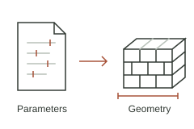
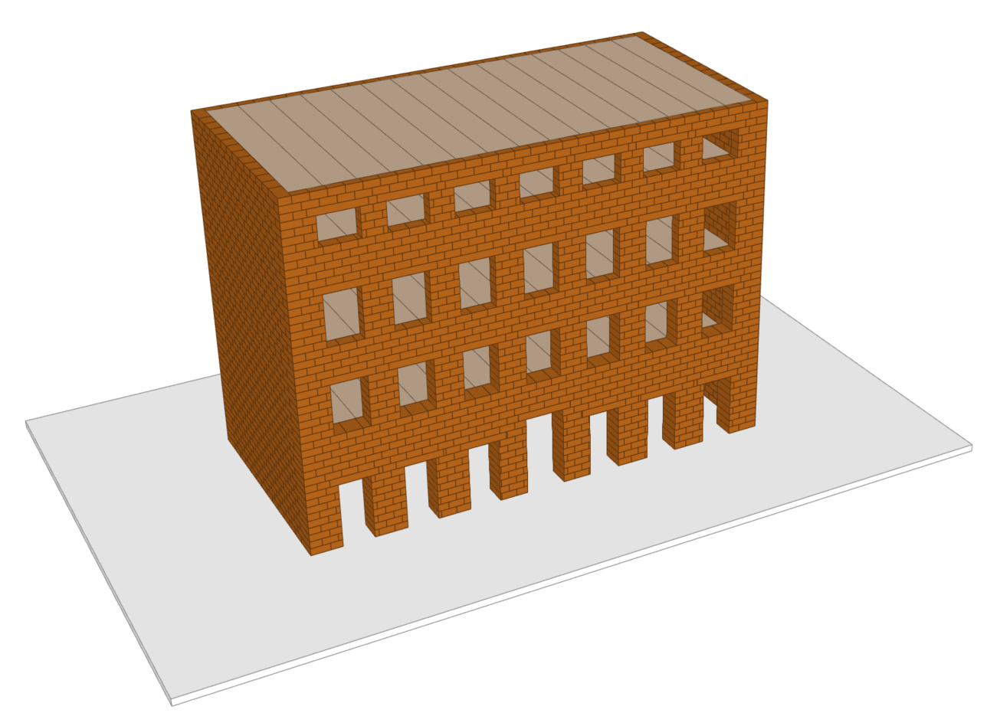
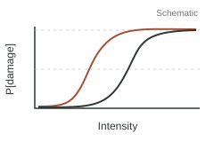

Planned release
Modelling & simulation workflows
Code for model generation, simulation setup and reproducible analysis will be linked here as it becomes available.
Open Science
Code, applications, data and publications: explore and reuse the research developed through FragMENTS.
01 / Code & repositories
GitHub will host project code and development documentation. This directory will link each released repository to its purpose, instructions and associated research output.

Planned release
Code for model generation, simulation setup and reproducible analysis will be linked here as it becomes available.
Planned release
Scripts and worked examples supporting calibration, validation and fragility assessment will accompany the relevant research outputs.
Public repository links have not been added yet.
02 / Applications
Applications developed through FragMENTS will be available here, alongside their source code and research documentation.

In preparation
Tools that can be opened directly in a web browser, with instructions and worked examples.
In preparation
Research software and scripts with installation requirements, documentation and version information.
There are no public applications available yet. Each release will include its intended users, an access or download link, source repository, and guidance on assumptions and limitations.
03 / Data & publications
Research outputs will be linked here as they become available, with persistent identifiers and citation details wherever possible.

Forthcoming
Shareable datasets, model inputs and versioned research software releases, with documentation, licences and Zenodo records where available.
Forthcoming
Open-access papers or accessible manuscript versions, alongside the code and data needed to follow the analysis.
04 / Training & knowledge sharing
Workshops connect researchers and engineers through practical examples, discussion and exchange of modelling experience.

Workshop · 2–4 December 2026 · Zagreb
Three days of theory and guided practice with Frédéric Dubois, with practical support from Maja Baniček and Mahmoud Shaqfa. The programme covers contact mechanics, rigid-body modelling and selected masonry applications.
Workshop materials are not available here yet. Any presentations, examples or scripts shared after the workshop will be linked with the authors’ permission and appropriate reuse terms.
Outputs
FragMENTS aims to establish a transparent, reproducible workflow connecting simulation with engineering assessment — for structural engineers, for civil protection authorities planning emergency response, and for urban planners and heritage stakeholders prioritising strengthening work. Outputs will be published as the project progresses.
A validated NSCD-based framework, calibrated contact parameters and documented modelling and validation protocols, reusable for other historic masonry typologies.
Wall- and component-level fragility relationships for intact and previously damaged buildings, together with a building-level life-safety indicator.
Journal publications, conference contributions and project workshops, with scripts and selected datasets shared openly via GitHub and Zenodo under FAIR principles.